This function produces a pairwise LD plot.
LDheatmap.RdLDheatmap() is used to produce a graphical display, as a heat map,
of pairwise linkage disequilibrium (LD) measurements for SNPs.
The heat map is a false color image in the upper-left diagonal of a square plot.
Optionally, a line parallel to the diagonal of the image indicating
the physical or genetic map positions of the SNPs may be added, along
with text reporting the total length of the genomic region considered.
LDheatmap(gdat, genetic.distances=NULL, distances="physical", LDmeasure="r", title="Pairwise LD", add.map=TRUE, add.key=TRUE, geneMapLocation=0.15, geneMapLabelX=NULL, geneMapLabelY=NULL, SNP.name=NULL, color=NULL, newpage=TRUE, name="ldheatmap", vp.name=NULL, pop=FALSE, flip=NULL, text=FALSE)
Arguments
| gdat | SNP data: a data frame of |
|---|---|
| genetic.distances | A numeric vector of map locations of the SNPs,
in the same order as SNPs listed in |
| distances | A character string to specify whether the provided map locations
are in physical or genetic distances.
If |
| LDmeasure | A character string specifying the measure of LD
- either allelic correlation \(r^2\) or Lewontin's
|D\('\)|; default = |
| title | A character string for the main title of the plot. Default is “Pairwise LD”. |
| add.map | If |
| add.key | If |
| geneMapLocation | A numeric value specifying the position of the line
parallel to the diagonal of the matrix; the larger the value, the
farther it lies from the matrix diagonal. Ignored when |
| geneMapLabelX | A numeric value specifying the x-coordinate
of the text indicating the total length of the genomic region
being considered. Ignored when |
| geneMapLabelY | A numeric value specifying the y-coordinate
of the text indicating the total length of the genomic region
being considered. Ignored when |
| SNP.name | A vector of character string(s) of SNP name(s) to
be labelled. Should match the names of SNPs in the provided object
|
| color | A range of colors to be used for drawing the heat map. Default |
| newpage | If |
| name | A character string specifying the name of the LDheatmap
graphical object ( |
| vp.name | A character string specifying the name of the viewport where the heat map is going to be drawn. |
| pop | If |
| flip | If |
| text | If |
Value
An object of class "LDheatmap" which contains the following components:
The matrix of pairwise LD measurements plotted in the heat map.
A grid graphical object (grob) representing the produced heat map.
The viewport in which the heat map is drawn. See viewport.
The vector of the supplied physical or genetic map locations, or the vector of equispaced marker distances when no distance vector is supplied.
A character string specifying whether the provided map distances are physical or genetic.
The range of colors used for drawing the heat map.
Details
The input object gdat can be a data frame of genotype objects
(a data structure from the genetics package), a SnpMatrix object (a
data structure from the snpStats package), or
any square matrix with values between 0 and 1
inclusive.
LD computation is much faster for SnpMatrix objects than for
genotype objects.
In the case of a matrix of LD values between 0 and 1,
the values above the diagonal will be plotted.
In the display of LD, SNPs appear in the order supplied by the
user as the horizontal and vertical coordinates are increased
and one moves along the off-diagonal line, from the bottom-left
to the top-right corner. To achieve this, the conventions of
the image() function have been adopted, in which horizontal
coordinates correspond to the rows of the matrix and vertical coordinates
correspond to columns, and vertical coordinates are indexed in increasing
order from bottom to top.
For the argument color, an appropriate
color palette for quantitative data is recommended,
as outlined in the help page of
the brewer.pal() function of
the
RColorBrewer package.
See the package vignette LDheatmap for more examples and details
of the implementation. Examples of adding ``tracks'' of genomic
annotation above a flipped heatmap are in the package vignette
addTracks.
Note
The produced heat map can be modified in two ways.
First, it is possible to edit interactively the grob components of the heat map,
by using the function grid.edit;
the function will not work if there is no
open graphical device showing the heat map.
Alternatively, the user can use the function
editGrob and work with
the grob LDheatmapGrob returned by LDheatmap.
See Examples for usage.
LDheatmap() uses Grid, which
does not respond to par() settings.
Hence modifying par() settings of mfrow and mfcol
will not work with LDheatmap(). The Examples section shows how to
display multiple heat maps on one plot without the use
of par().
References
Shin J-H, Blay S, McNeney B and Graham J (2006). LDheatmap: An R Function for Graphical Display of Pairwise Linkage Disequilibria Between Single Nucleotide Polymorphisms. Journal of Statistical Software, 16 Code Snippet 3
See also
Examples
# Pass LDheatmap a SnpMatrix object set.seed(1) #make an example matrix of genotypes, coded as 0, 1 2 copies of an index allele gdat<-matrix(rbinom(n=500,size=2,prob=.5),ncol=5) require(snpStats) gdat<-as(gdat,"SnpMatrix")#> object has no names - using numeric order for row/column namesLDheatmap(gdat,genetic.distances=c(0,1000,3000,4000,10000))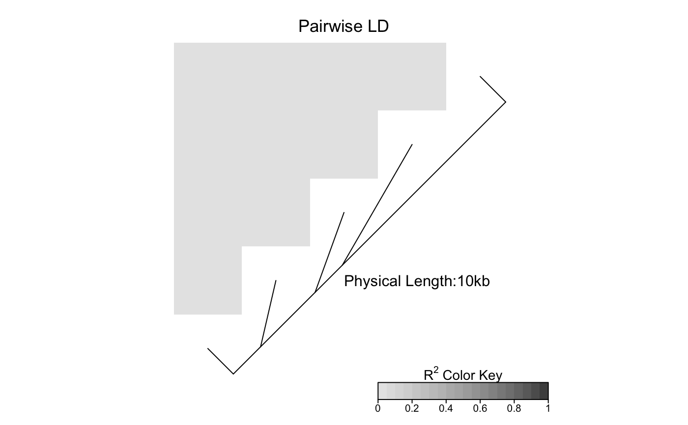#Load the package's data set data(CEUData) #Creates a data frame "CEUSNP" of genotype data and a vector "CEUDist" #of physical locations of the SNPs # Produce a heat map in a grey color scheme MyHeatmap <- LDheatmap(CEUSNP, genetic.distances = CEUDist, color = grey.colors(20))# Same heatmap, flipped below a horizontal gene map -- for examples of # adding genomic annotation tracks to a flipped heatmap see # vignette("addTracks") # flippedHeatmap<-LDheatmap(MyHeatmap,flip=TRUE) # Prompt the user before starting a new page of graphics output # and save the original prompt settings in old.prompt. old.prompt <- devAskNewPage(ask = TRUE) # Highlight a certain LD block of interest: LDheatmap.highlight(MyHeatmap, i = 3, j = 8, col = "black", fill = "grey",flipOutline=FALSE, crissCross=FALSE)# Plot a symbol in the center of the pixel which represents LD between # the fourth and seventh SNPs: LDheatmap.marks(MyHeatmap, 4, 7, gp=grid::gpar(cex=2), pch = "*")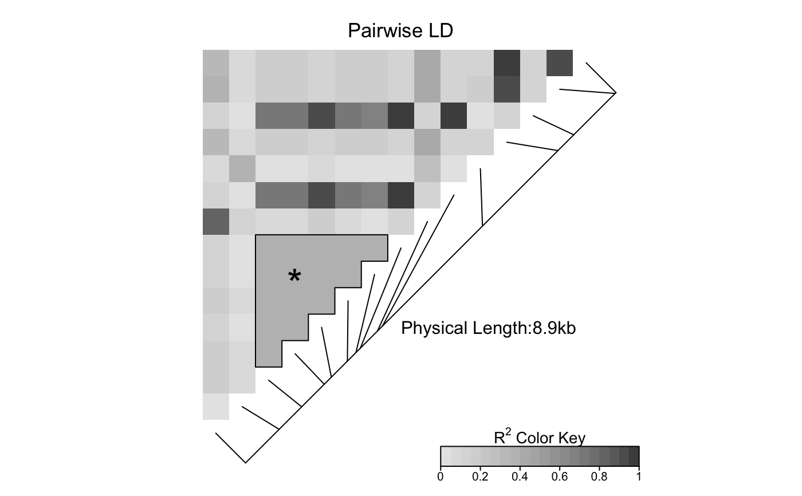#### Use an RGB pallete for the color scheme #### rgb.palette <- colorRampPalette(rev(c("blue", "orange", "red")), space = "rgb") LDheatmap(MyHeatmap, color=rgb.palette(18))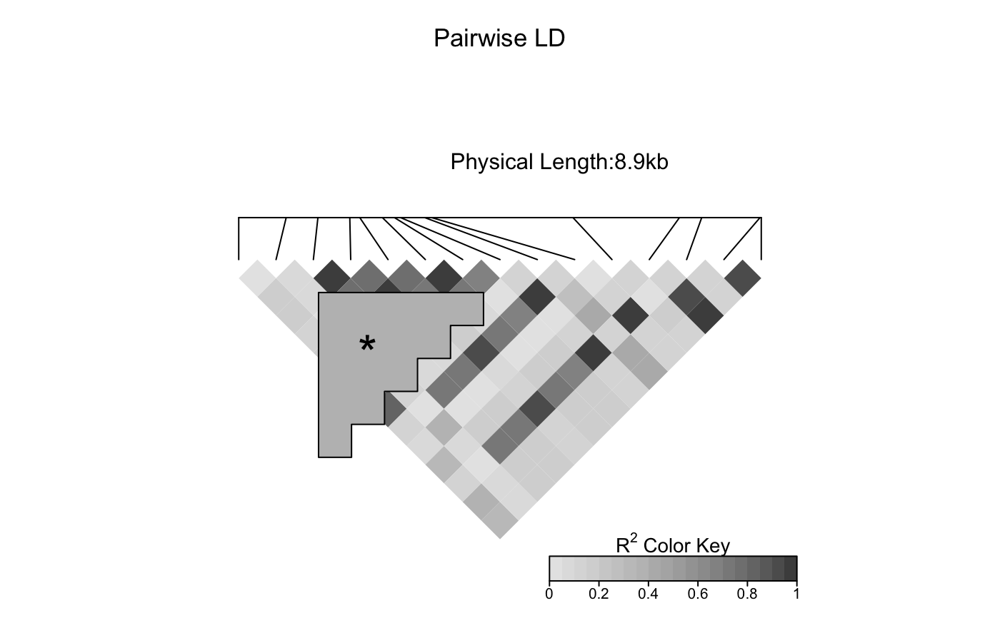#### Modify the plot by using 'grid.edit' function #### #Draw a heat map where the SNPs "rs2283092" and "rs6979287" are labelled. require(grid)#>LDheatmap(MyHeatmap, SNP.name = c("rs2283092", "rs6979287"))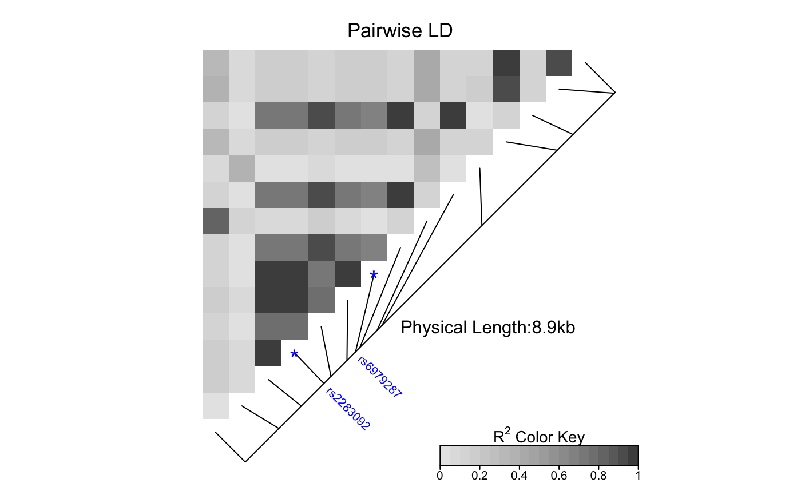#Find the names of the top-level graphical objects (grobs) on the current display getNames()#> [1] "ldheatmap"#[1] "ldheatmap" # Find the names of the component grobs of "ldheatmap" childNames(grid.get("ldheatmap"))#> [1] "heatMap" "geneMap" "Key"#[1] "heatMap" "geneMap" "Key" #Find the names of the component grobs of heatMap childNames(grid.get("heatMap"))#> [1] "heatmap" "title"#[1] "heatmap" "title" #Find the names of the component grobs of geneMap childNames(grid.get("geneMap"))#> [1] "diagonal" "segments" "title" "symbols" "SNPnames"#[1] "diagonal" "segments" "title" "symbols" "SNPnames" #Find the names of the component grobs of Key childNames(grid.get("Key"))#> [1] "colorKey" "title" "labels" "ticks" "box"#[1] "colorKey" "title" "labels" "ticks" "box" #Change the plotting symbols that identify SNPs rs2283092 and rs6979287 #on the plot to bullets grid.edit("symbols", pch = 20, gp = gpar(cex = 1))#Change the color of the main title grid.edit(gPath("ldheatmap", "heatMap", "title"), gp = gpar(col = "red"))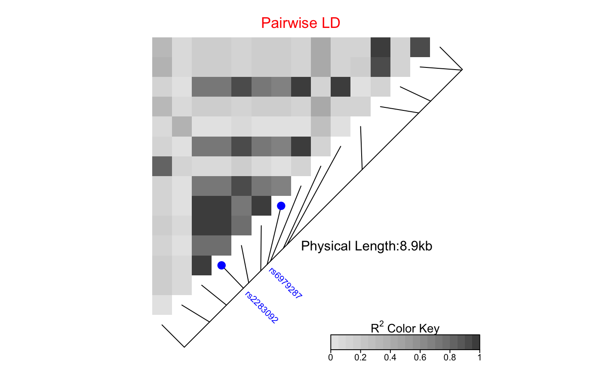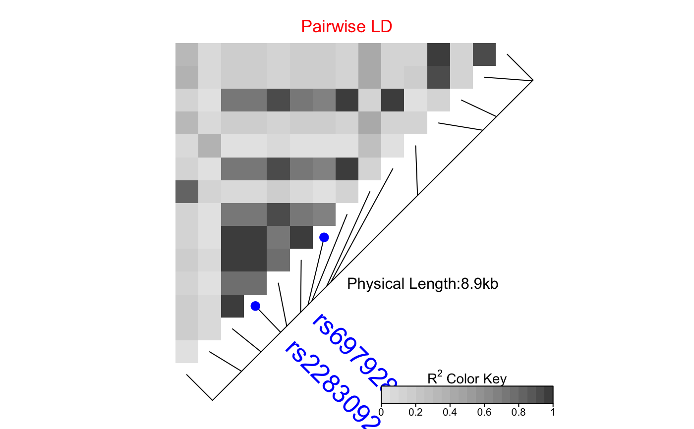#Add a grid of white lines to the plot to separate pairwise LD measures grid.edit(gPath("ldheatmap", "heatMap", "heatmap"), gp = gpar(col = "white", lwd = 2))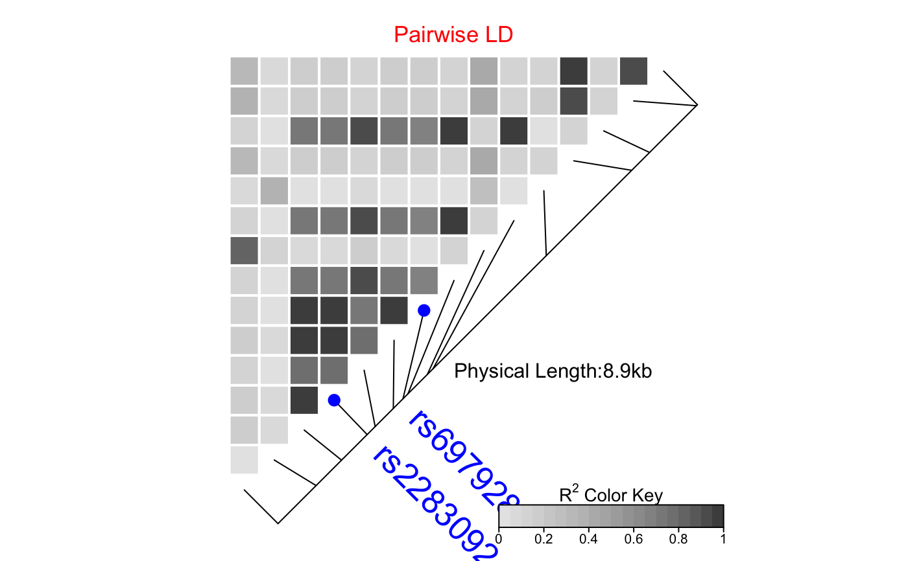#### Modify a heat map using 'editGrob' function #### MyHeatmap <- LDheatmap(MyHeatmap, color = grey.colors(20))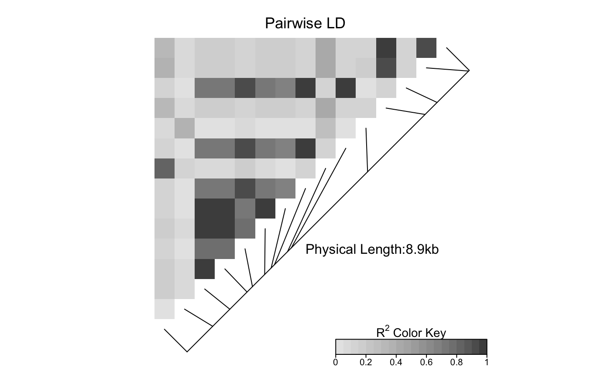new.grob <- editGrob(MyHeatmap$LDheatmapGrob, gPath("geneMap", "segments"), gp=gpar(col="orange")) ##Clear the old graphics object from the display before drawing the modified heat map: grid.newpage() grid.draw(new.grob)# now the colour of line segments connecting the SNP # positions to the LD heat map has been changed from black to orange. #### Draw a resized heat map (in a 'blue-to-red' color scale #### grid.newpage() pushViewport(viewport(width=0.5, height=0.5))LDheatmap(MyHeatmap, SNP.name = c("rs2283092", "rs6979287"), newpage=FALSE, color="blueToRed")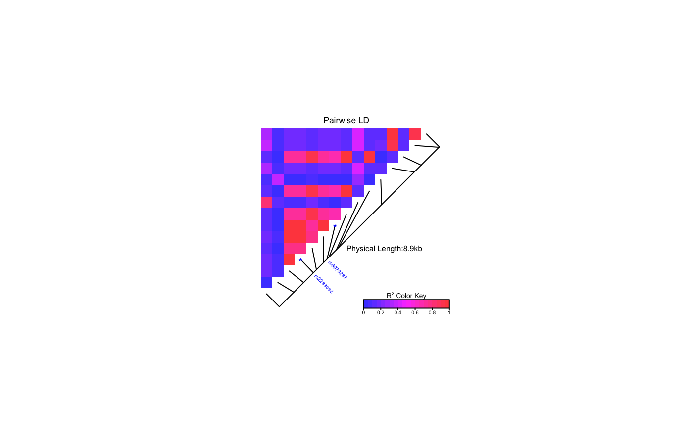#### Draw and modify two heat maps on one plot #### grid.newpage() ##Draw and the first heat map on the left half of the graphics device pushViewport(viewport(x=0, width=0.5, just="left"))LD1<-LDheatmap(MyHeatmap, color=grey.colors(20), newpage=FALSE, title="Pairwise LD in grey.colors(20)", SNP.name="rs6979572", geneMapLabelX=0.6, geneMapLabelY=0.4, name="ld1")##Draw the second heat map on the right half of the graphics device pushViewport(viewport(x=1,width=0.5,just="right"))LD2<-LDheatmap(MyHeatmap, newpage=FALSE, title="Pairwise LD in heat.colors(20)", SNP.name="rs6979572", geneMapLabelX=0.6, geneMapLabelY=0.4, name="ld2")##Modify the text size of main title of the first heat map. grid.edit(gPath("ld1", "heatMap","title"), gp=gpar(cex=1.5))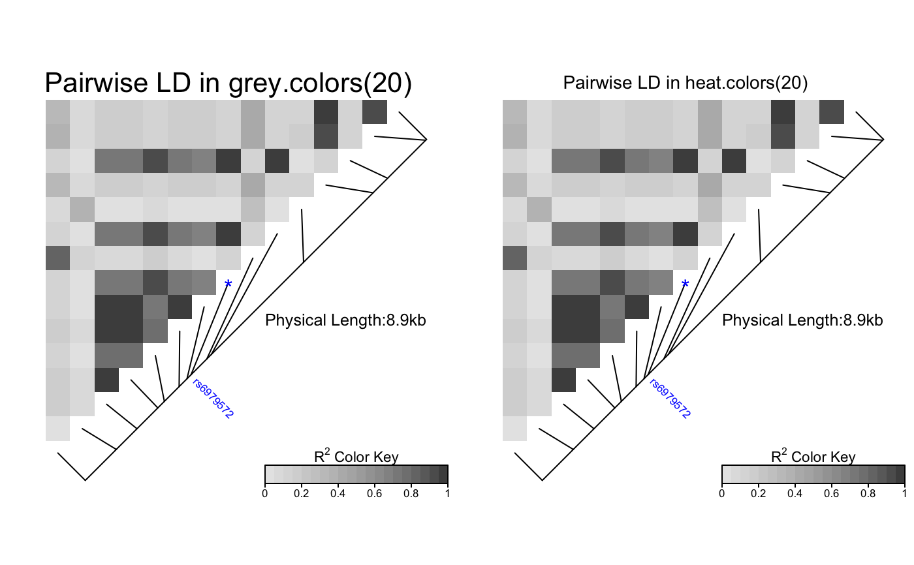##Modify the text size and color of the SNP label of the second heat map. grid.edit(gPath("ld2", "geneMap","SNPnames"), gp=gpar(cex=1.5, col="DarkRed"))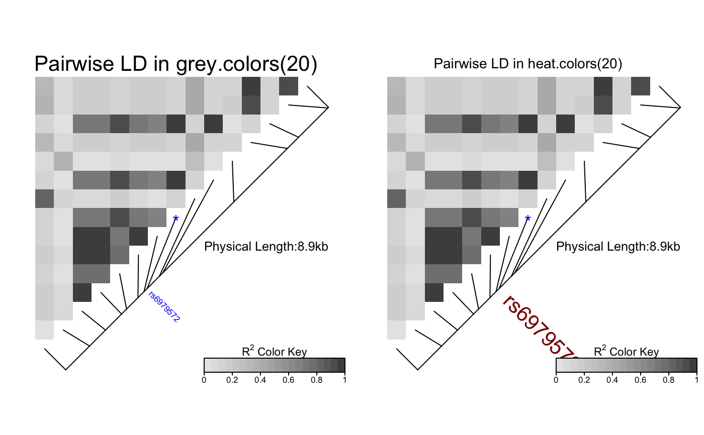#### Draw a lattice-like plot with heat maps in panels #### # Load CHBJPTSNP and CHBJPTDist data(CHBJPTData) # Make a variable which indicates Chinese vs. Japanese pop <- factor(c(rep("chinese",45), rep("japanese",45))) require(lattice) xyplot(1:nrow(CHBJPTSNP) ~ 1:nrow(CHBJPTSNP) | pop, type="n", scales=list(draw=FALSE), xlab="", ylab="", panel=function(x, y, subscripts,...) { LDheatmap(CHBJPTSNP[subscripts,], CHBJPTDist, newpage=FALSE) })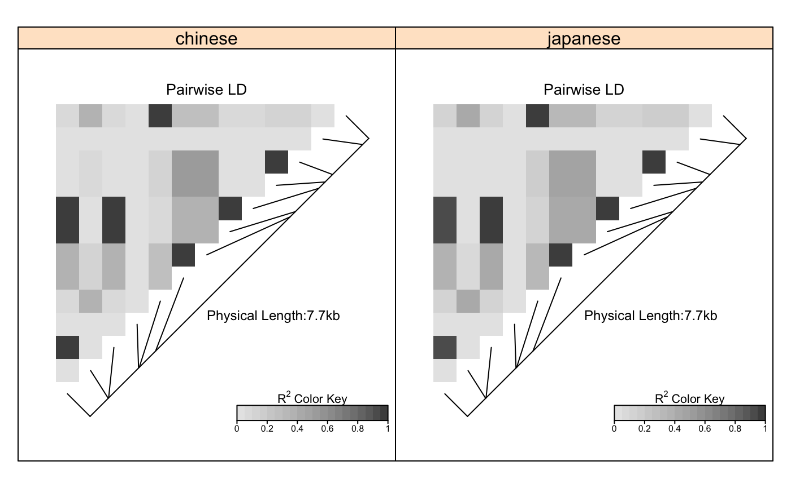data(GIMAP5) require(lattice) n<-nrow(GIMAP5$snp.data) xyplot(1:n ~ 1:n | GIMAP5$subject.support$pop, type="n", scales=list(draw=FALSE), xlab="", ylab="", panel=function(x, y, subscripts,...) { LDheatmap(GIMAP5$snp.data[subscripts,], GIMAP5$snp.support$Position, SNP.name="rs6598", newpage=FALSE) })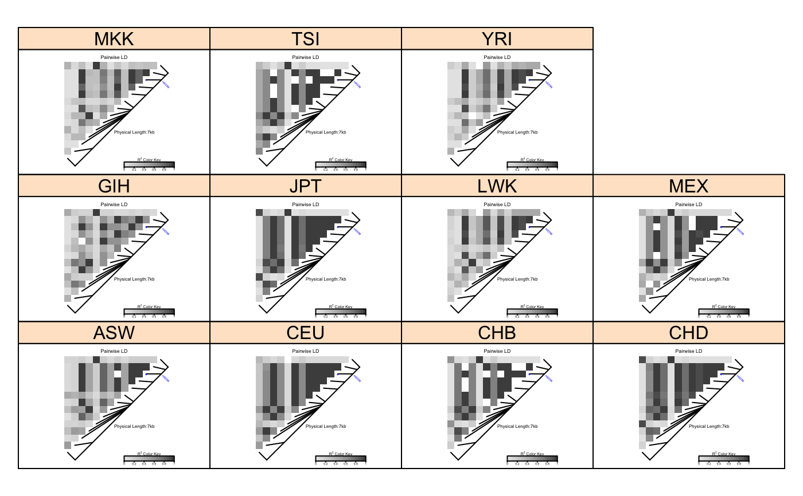#Reset the user's setting for prompting on the graphics output #to the original value before running these example commands. devAskNewPage(old.prompt)